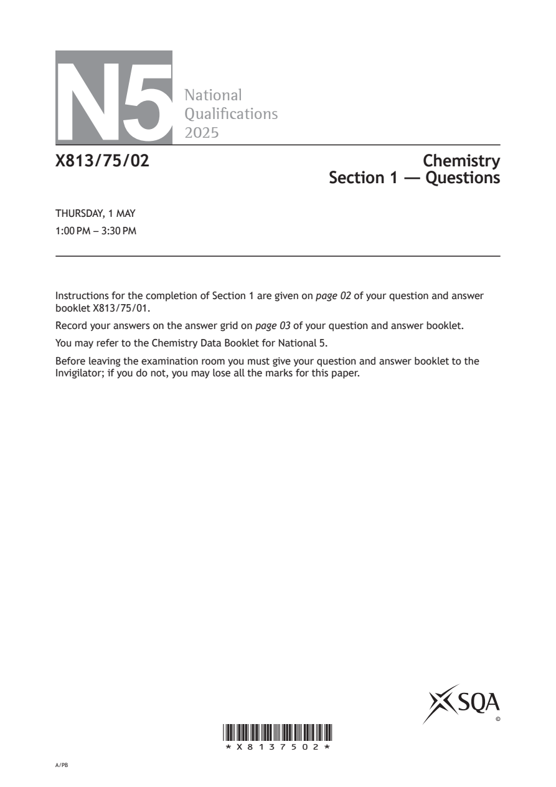
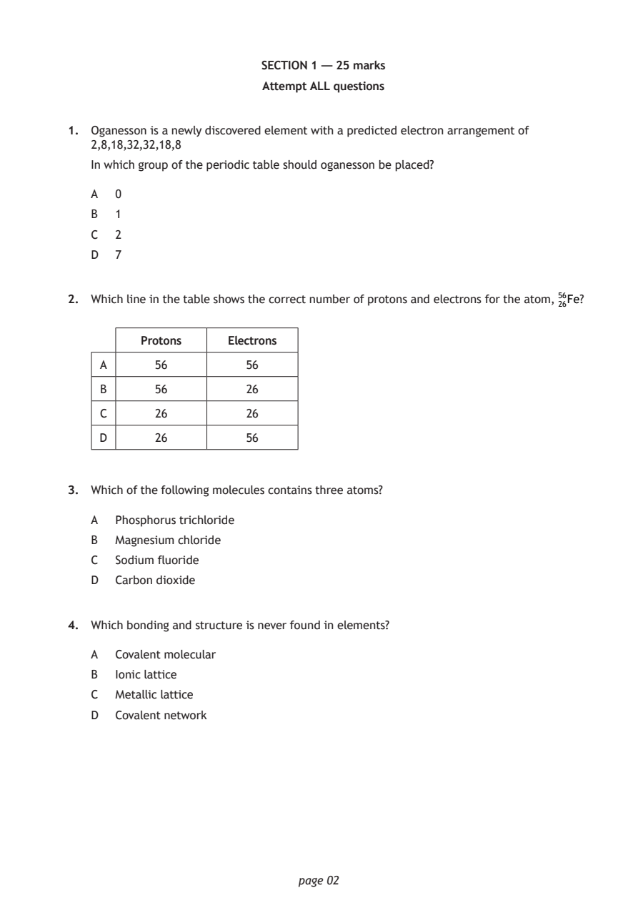
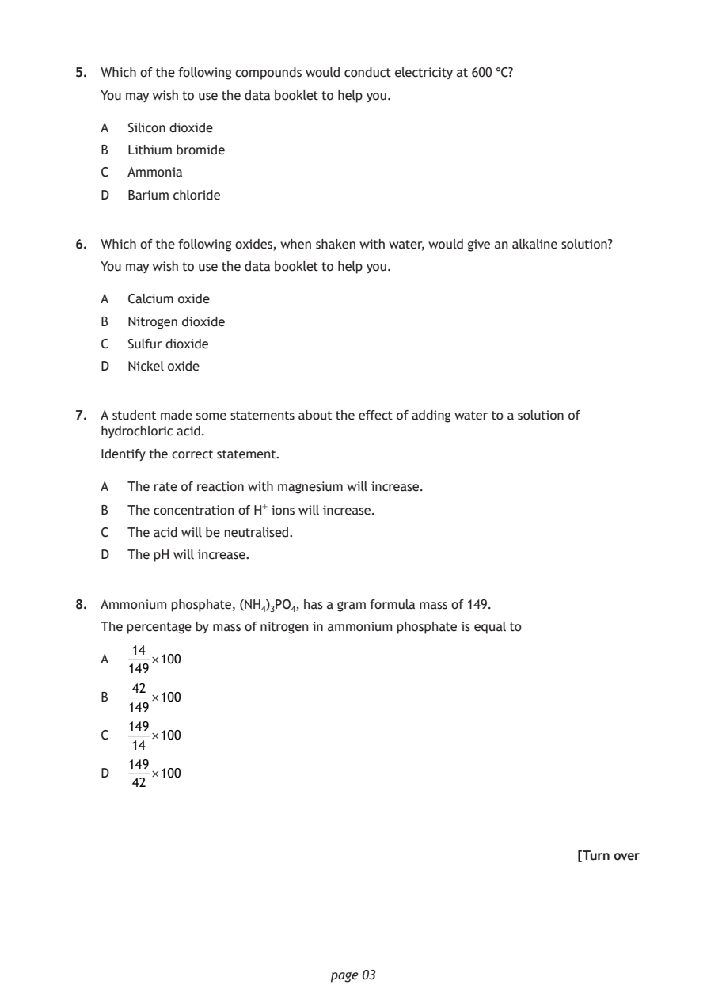
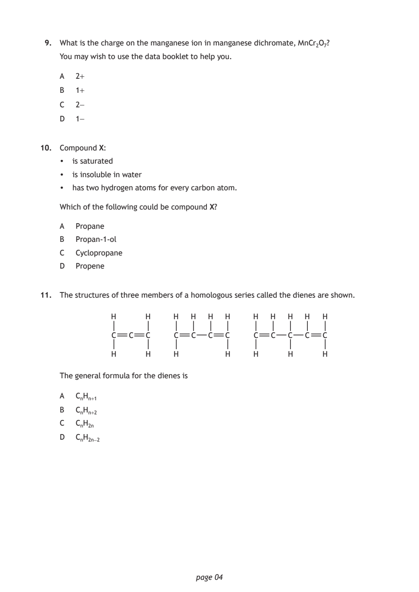
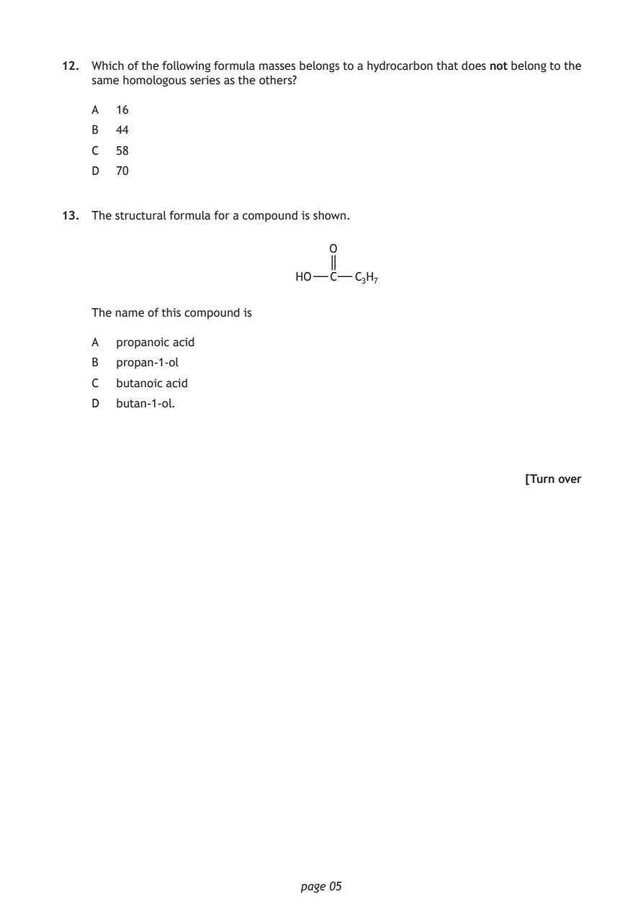
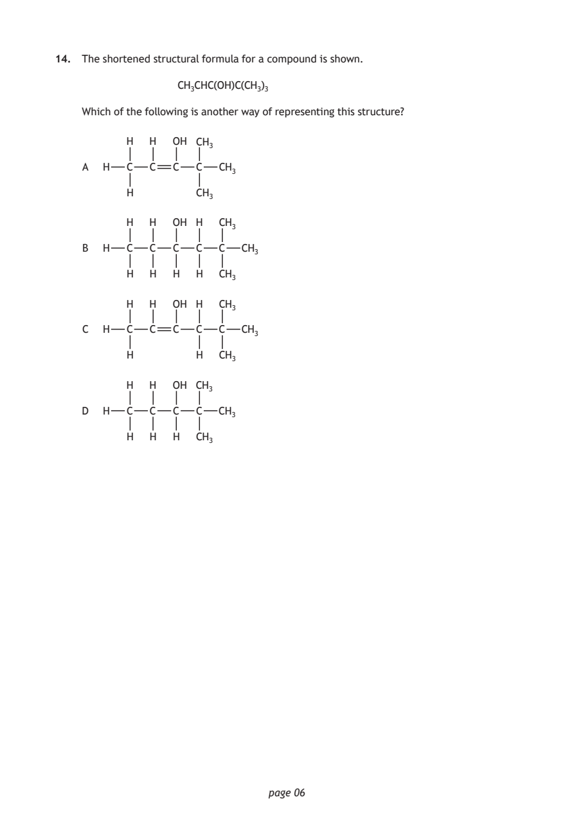
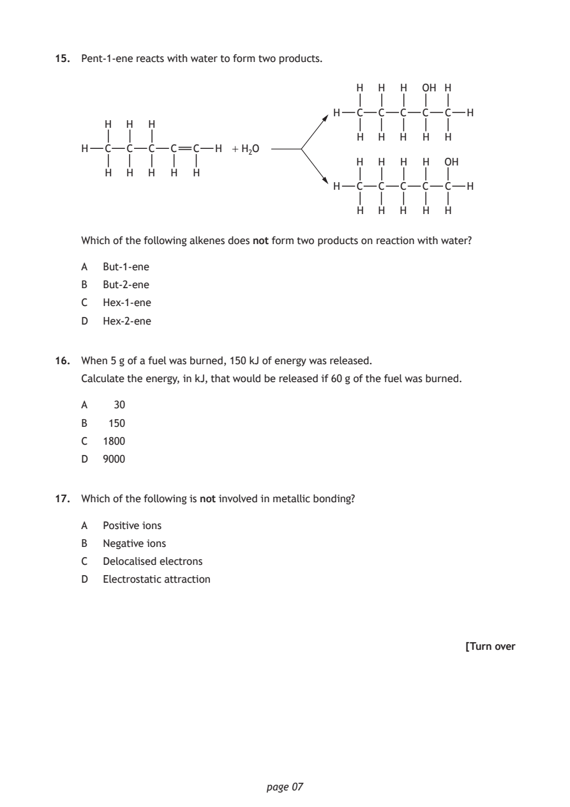
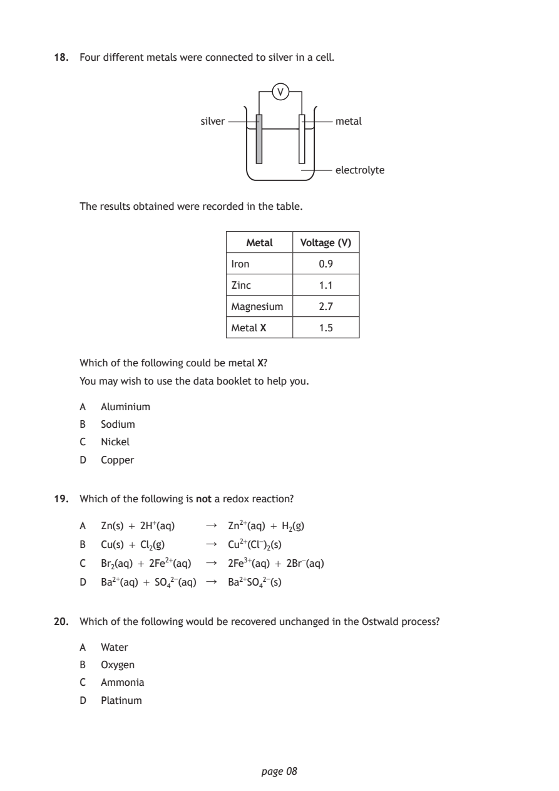
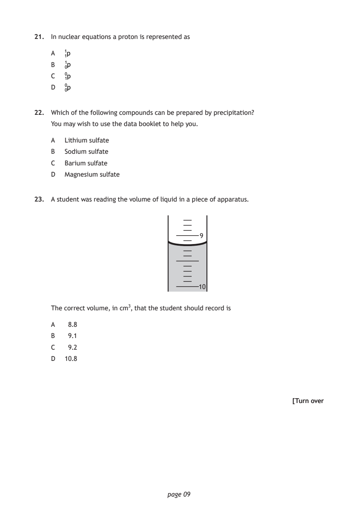
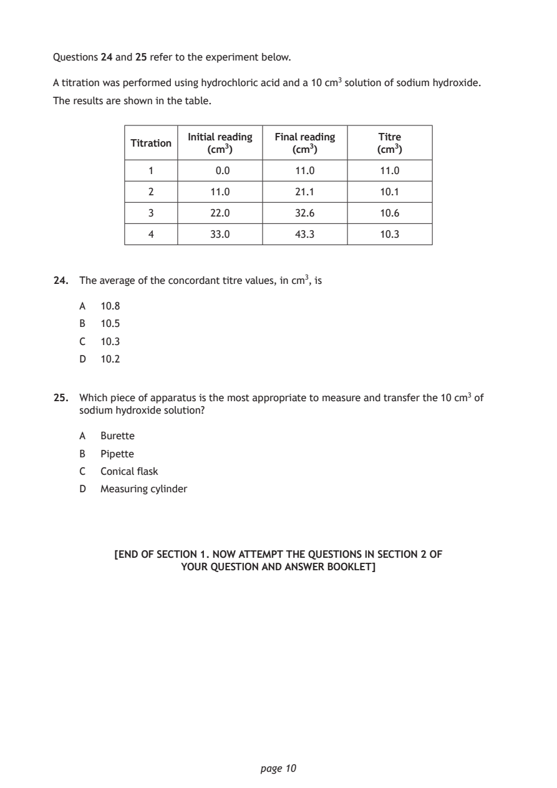

2025 National 5 Chemistry - Paper 1 questions
Source: Scottish Qualifications Authority (SQA) / Qualifications Scotland. This is a StemInteract HTML companion, not an official HTML edition. Selectable text is supplied alongside original page images. Use the images or original PDF for equations, powers, fractions, vector notation, tables and diagrams; text extraction cannot fully preserve mathematical layout.
Jump to a question
PDF page 1

Selectable page text
N5
National
Qualications
2025
X813/75/02 Chemistry
Section 1 — Questions
THURSDAY, 1 MAY
1:00 PM – 3:30 PM
Instructions for the completion of Section 1 are given on page 02 of your question and answer
booklet X813/75/01.
Record your answers on the answer grid on page 03 of your question and answer booklet.
You may refer to the Chemistry Data Booklet for National 5.
Before leaving the examination room you must give your question and answer booklet to the
Invigilator; if you do not, you may lose all the marks for this paper.
©
*X8137502*
A/PBPDF page 2
Paper 1, Question 1Paper 1, Question 2Paper 1, Question 3Paper 1, Question 4
Selectable page text
SECTION 1 — 25 marks
Attempt ALL questions
1. Oganesson is a newly discovered element with a predicted electron arrangement of
2,8,18,32,32,18,8
In which group of the periodic table should oganesson be placed?
A 0
B 1
C 2
D 7
2. Which line in the table shows the correct number of protons and electrons for the atom, ⁵₂⁶₆Fe?
Protons Electrons
A 56 56
B 56 26
C 26 26
D 26 56
3. Which of the following molecules contains three atoms?
A Phosphorus trichloride
B Magnesium chloride
C Sodium fluoride
D Carbon dioxide
4. Which bonding and structure is never found in elements?
A Covalent molecular
B Ionic lattice
C Metallic lattice
D Covalent network
page 02PDF page 3
Paper 1, Question 5Paper 1, Question 6Paper 1, Question 7Paper 1, Question 8
Selectable page text
5. Which of the following compounds would conduct electricity at 600 °C?
You may wish to use the data booklet to help you.
A Silicon dioxide
B Lithium bromide
C Ammonia
D Barium chloride
6. Which of the following oxides, when shaken with water, would give an alkaline solution?
You may wish to use the data booklet to help you.
A Calcium oxide
B Nitrogen dioxide
C Sulfur dioxide
D Nickel oxide
7. A student made some statements about the effect of adding water to a solution of
hydrochloric acid.
Identify the correct statement.
A The rate of reaction with magnesium will increase.
B The concentration of H⁺ ions will increase.
C The acid will be neutralised.
D The pH will increase.
8. Ammonium phosphate, (NH₄)₃PO₄, has a gram formula mass of 149.
The percentage by mass of nitrogen in ammonium phosphate is equal to
14
A ×100
149
42
B ×100
149
149
C ×100
14
149
D ×100
42
[Turn over
page 03PDF page 4
Paper 1, Question 9Paper 1, Question 10Paper 1, Question 11
Selectable page text
9. What is the charge on the manganese ion in manganese dichromate, MnCr₂O₇?
You may wish to use the data booklet to help you.
A 2+
B 1+
C 2-
D 1-
10. Compound X:
• is saturated
• is insoluble in water
• has two hydrogen atoms for every carbon atom.
Which of the following could be compound X?
A Propane
B Propan-1-ol
C Cyclopropane
D Propene
11. The structures of three members of a homologous series called the dienes are shown.
H H H H H H H H H H H
C C C C C C C C C C C C
H H H H H H H
The general formula for the dienes is
A CₙHₙ₊₁
B CₙHₙ₊₂
C CₙH₂ₙ
D CₙH₂ₙ₋₂
page 04PDF page 5
Paper 1, Question 12Paper 1, Question 13
Selectable page text
12. Which of the following formula masses belongs to a hydrocarbon that does not belong to the
same homologous series as the others?
A 16
B 44
C 58
D 70
13. The structural formula for a compound is shown.
O
HO C C₃H₇
The name of this compound is
A propanoic acid
B propan-1-ol
C butanoic acid
D butan-1-ol.
[Turn over
page 05PDF page 6
Paper 1, Question 14
Selectable page text
14. The shortened structural formula for a compound is shown.
CH₃CHC(OH)C(CH₃)₃
Which of the following is another way of representing this structure?
H H OH CH₃
A H C C C C CH₃
H CH₃
H H OH H CH₃
B H C C C C C CH₃
H H H H CH₃
H H OH H CH₃
C H C C C C C CH₃
H H CH₃
H H OH CH₃
D H C C C C CH₃
H H H CH₃
page 06PDF page 7
Paper 1, Question 15Paper 1, Question 16Paper 1, Question 17
Selectable page text
15. Pent-1-ene reacts with water to form two products.
H H H OH H
H C C C C C H
H H H
H H H H H
H C C C C C H + H₂O
H H H H OH
H H H H H
H C C C C C H
H H H H H
Which of the following alkenes does not form two products on reaction with water?
A But-1-ene
B But-2-ene
C Hex-1-ene
D Hex-2-ene
16. When 5 g of a fuel was burned, 150 kJ of energy was released.
Calculate the energy, in kJ, that would be released if 60 g of the fuel was burned.
A 30
B 150
C 1800
D 9000
17. Which of the following is not involved in metallic bonding?
A Positive ions
B Negative ions
C Delocalised electrons
D Electrostatic attraction
[Turn over
page 07PDF page 8
Paper 1, Question 18Paper 1, Question 19Paper 1, Question 20
Selectable page text
18. Four different metals were connected to silver in a cell.
V
silver metal
electrolyte
The results obtained were recorded in the table.
Metal Voltage (V)
Iron 0.9
Zinc 1.1
Magnesium 2.7
Metal X 1.5
Which of the following could be metal X?
You may wish to use the data booklet to help you.
A Aluminium
B Sodium
C Nickel
D Copper
19. Which of the following is not a redox reaction?
A Zn(s) + 2H⁺(aq) ↓ Zn²⁺(aq) + H₂(g)
B Cu(s) + Cl₂(g) ↓ Cu²⁺(Cl⁻)₂(s)
C Br₂(aq) + 2Fe²⁺(aq) ↓ 2Fe³⁺(aq) + 2Br⁻(aq)
D Ba²⁺(aq) + SO₄²⁻(aq) ↓ Ba²⁺SO₄²⁻(s)
20. Which of the following would be recovered unchanged in the Ostwald process?
A Water
B Oxygen
C Ammonia
D Platinum
page 08PDF page 9
Paper 1, Question 21Paper 1, Question 22Paper 1, Question 23
Selectable page text
21. In nuclear equations a proton is represented as
A ¹₁p
B ¹₀p
C ₁⁰p
D ⁰₀p
22. Which of the following compounds can be prepared by precipitation?
You may wish to use the data booklet to help you.
A Lithium sulfate
B Sodium sulfate
C Barium sulfate
D Magnesium sulfate
23. A student was reading the volume of liquid in a piece of apparatus.
9
10
The correct volume, in cm³, that the student should record is
A 8.8
B 9.1
C 9.2
D 10.8
[Turn over
page 09PDF page 10
Paper 1, Question 24Paper 1, Question 25
Selectable page text
Questions 24 and 25 refer to the experiment below.
A titration was performed using hydrochloric acid and a 10 cm³ solution of sodium hydroxide.
The results are shown in the table.
Initial reading Final reading Titre
Titration
(cm³) (cm³) (cm³)
1 0.0 11.0 11.0
2 11.0 21.1 10.1
3 22.0 32.6 10.6
4 33.0 43.3 10.3
24. The average of the concordant titre values, in cm³, is
A 10.8
B 10.5
C 10.3
D 10.2
25. Which piece of apparatus is the most appropriate to measure and transfer the 10 cm³ of
sodium hydroxide solution?
A Burette
B Pipette
C Conical flask
D Measuring cylinder
[END OF SECTION 1. NOW ATTEMPT THE QUESTIONS IN SECTION 2 OF
YOUR QUESTION AND ANSWER BOOKLET]
page 10PDF page 11

Selectable page text
[BLANK PAGE]
DO NOT WRITE ON THIS PAGE
page 11PDF page 12

Selectable page text
[BLANK PAGE]
DO NOT WRITE ON THIS PAGE
page 12